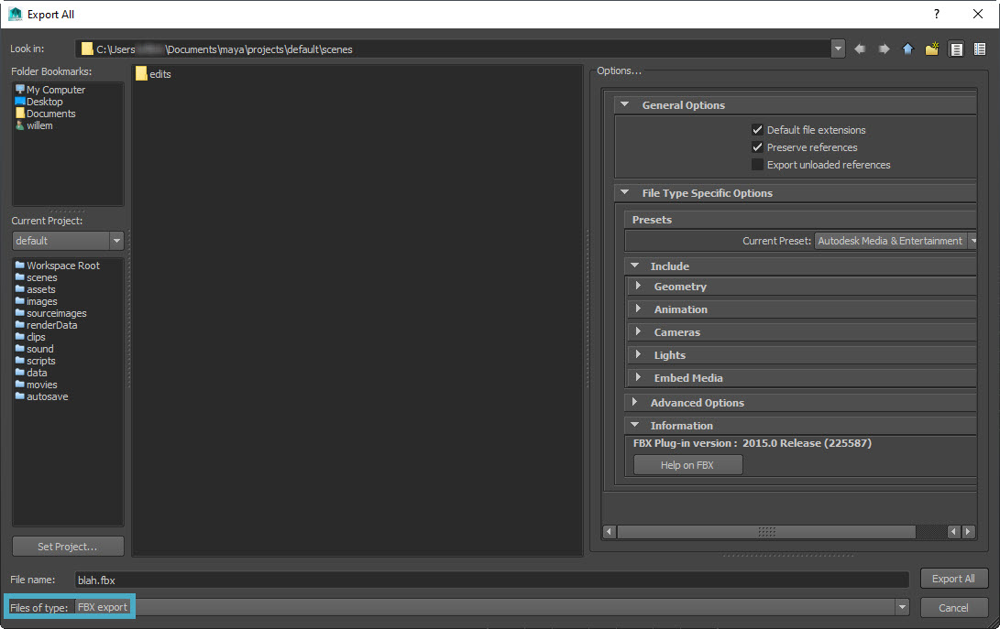
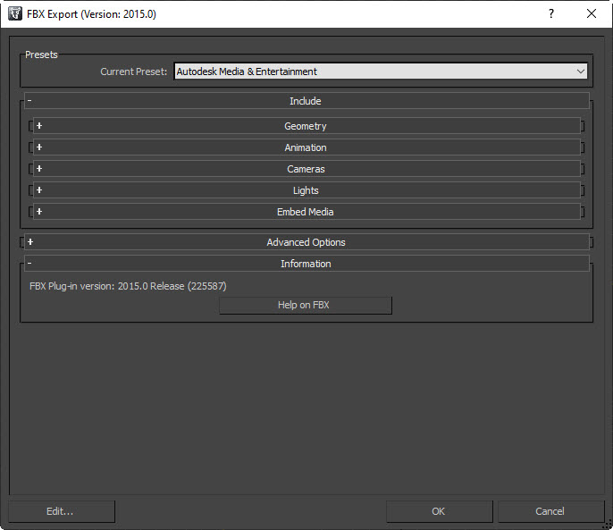
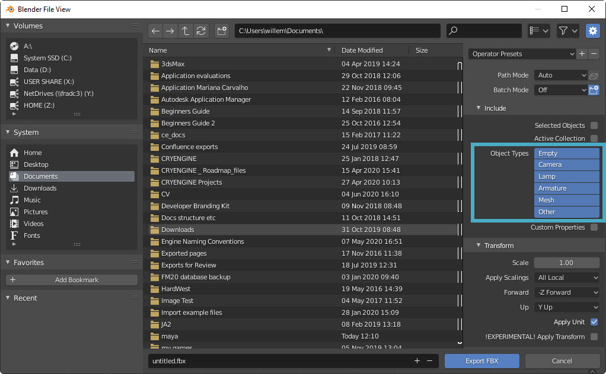

Overview
This tutorial will guide you on how to export your characters from Maya, 3ds Max and Blender into CRYENGINE.
Since we don't have tools for every 3D authoring software out there, we advise exporting your scene as an .fbx file no matter which software you're using as this makes importing into CRYENGINE much easier.
Maya
- Go to File → Export All.
- Next to Files of type (in the bottom of the Export All window), choose FBX export:

Maya Export All window - If you have a simple mesh, go to the Options panel on the right, expand File Type Specific Options → Inlcude → Geometry and enable Smoothing Groups, Smooth Mesh and Referenced Assets Content.
If you have a character with animations, make sure Animation → Animation is enabled.
Then expand Animation → Bake Animations and make sure Bake Animation is enabled.You can specify the exact frame of the start and the end of the animation here.
- If you have any blend shapes on your character, make sure Deformed Models → Deformed Models is enabled, as well as Skins.
- Click Export All.
3ds Max
- Go to File (or Max button) → Export.
- Choose a location and name for your exported FBX, and click Save. The following window will pop up:

3ds Max FBX Export window Under Geometry, enable Smoothing Groups, TurboSmooth and Triangulate.
If any other options than the ones mentioned above are already enabled, they can remain enabled.If you have an animated character, make sure Animation → Animation is enabled.
In this case, also enable Animation → Bake Animation → Bake Animation.You can specify the exact frame of the start and the end of the animation here.
- If you have any blend shapes on your character, make sure that Animation → Deformations → Deformations is enabled, as well as Skins and Morphs.
- Click OK.
Blender
- Go to File → Export → FBX.
- In the newly opened Blender File View window under Include → Object Types in the panel on the right, choose which object types you want to include in your .fbx file:

Blender File View window Under Transform, you can set the forward and upward direction of your geometry. If you change any value here, make sure to enable Apply Unit.
With these options, you can change the orientation of the origin model, but not the direction of the animations.
Under Geometry, make sure Smoothing is set to Normals Only and enable Apply Modifiers.
If any other options than the ones mentioned above are already enabled, they can remain enabled.Under Armature, nothing needs to be changed.
Making changes here will change the orientation of the bones of your character, which can have some strange results in CRYENGINE. Only change this if you know exactly what you're doing.
- If your character has animations, make sure Bake Animation is enabled, along with all the options under this section.
- Click Export FBX.
In CRYENGINE
- In the Asset Browser, navigate to the folder you want to save your asset in.
- Hold Ctrl and drag & drop your .fbx file from your Windows Explorer into the Asset Browser.
- Choose which parts of the asset you want to import and click Import.
- Wait for the asset to be imported and you're done!